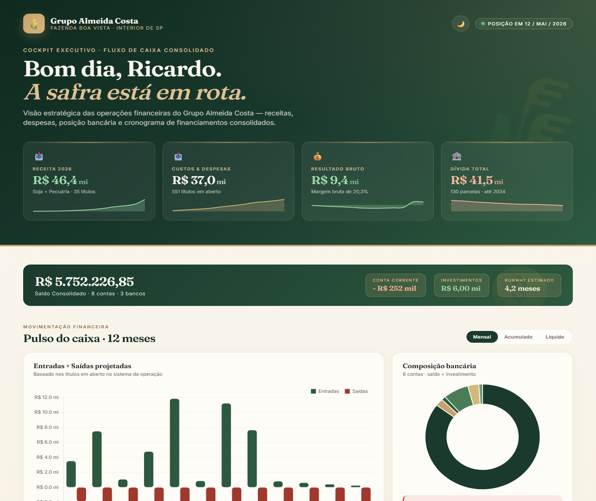
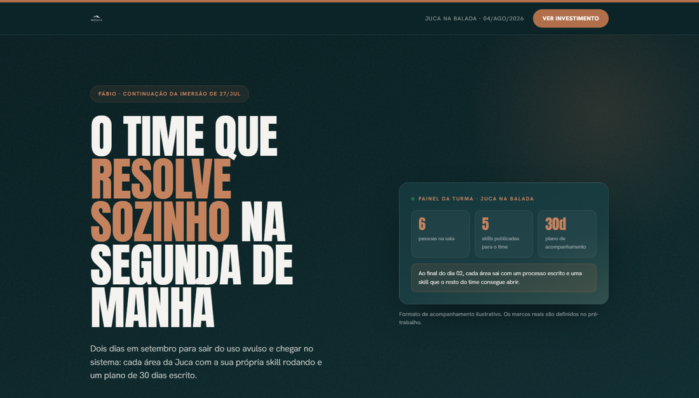
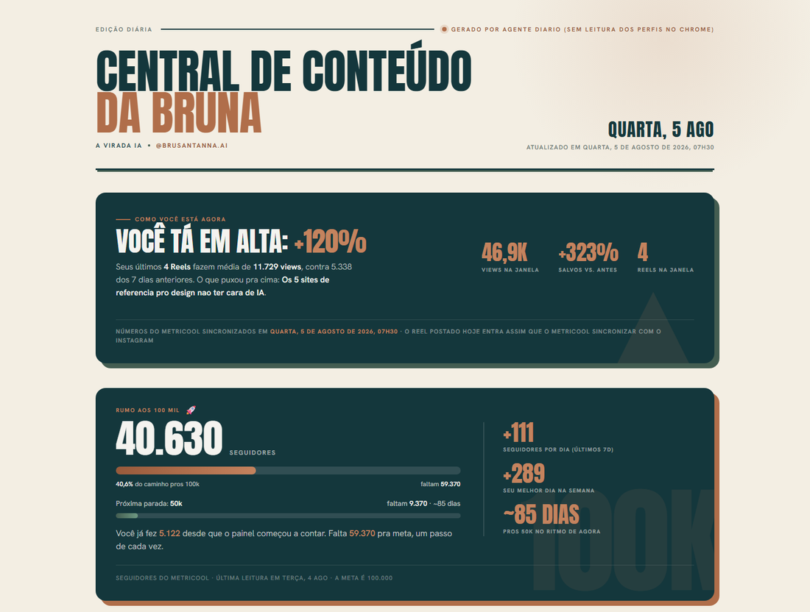
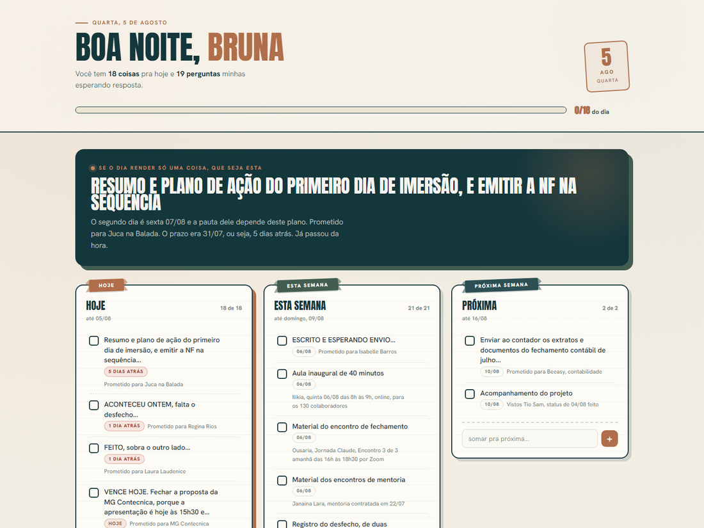

AULA INAUGURAL · PROGRAMA ILIKIA · 06 DE AGOSTO DE 2026
DE CONVERSAR
A FAZER
A virada da IA que responde para a IA que trabalha.
Bruna Santanna
01 / 23
VIRADA
QUEM CONDUZ ESTA AULA
BRUNA
SANTANNA
Estrategista e mentora de Inteligência Artificial
Empresária há mais de 10 anos e cofundadora da NewScale. Eu passo os meus dias dentro de empresas, sentada do lado de quem faz o trabalho.
10+
anos como empresária
1.000+
profissionais formados
todo dia eu posto uma dessas lá
@BRUSANTANNA.AI
aponta a câmera
instagram.com/brusantanna.ai
Tudo que eu mostro aqui hoje eu publico lá, todo dia.
02 / 23
ONDE A GENTE ESTÁ NESSA HISTÓRIA
A IA NÃO SÓ FICOU MAIS ESPERTA.
ELA SAIU DA CONVERSA E PARTIU PARA A AÇÃO.
Ela fica mais inteligente todos os dias — isso é verdade e não vai parar. Mas o que virou a chave para o seu trabalho foi outra coisa.
ATÉ 2023 · GERAÇÃO 01
Ela
responde
responde
Você pergunta, ela escreve um texto. Copiar, colar, conferir e fazer continua inteiro com você.
"me explique como
montar esse relatório"
montar esse relatório"
o trabalho continua na sua mão
2024 – 2025 · GERAÇÃO 02
Ela
raciocina
raciocina
Ela para, pensa antes de responder, confere o próprio raciocínio e erra bem menos. Mas ainda entrega texto.
"analise estes números
e me diga o que preocupa"
e me diga o que preocupa"
a resposta melhora, o trabalho não sai
2026 · GERAÇÃO 03 · AGORA
Ela
age
age
Ela abre arquivo, lê site, cruza planilha, monta a página, confere o resultado e volta com o trabalho pronto.
"pega as 8 planilhas e
me devolve o painel pronto"
me devolve o painel pronto"
o entregável sai da conversa
A grande virada não é a IA escrever melhor. É ela conseguir trabalhar.
03 / 23
VIRADA
O MESMO PEDIDO, NAS DUAS ERAS
"ME MOSTRA COMO ESTÁ
O CAIXA DESTE MÊS."
A IA que responde
"Me mostra como está o caixa deste mês."
"Claro! Para analisar o fluxo de caixa, comece separando entradas e saídas em três blocos…"
"Mas eu queria o meu caixa."
"Sem problema — me cole os dados aqui que eu organizo."
Ela te ensina a fazer. Quem faz continua sendo você.
A IA que age
trabalhando
✓ abri as 8 planilhas das filiais · 3 formatos diferentes
✓ juntei com os títulos em aberto do sistema
✓ achei 2 lançamentos duplicados · separei pra você
✓ montei o painel com os 12 meses projetados
✓ conferi os totais contra o extrato
→ pronto: painel aberto no seu navegador
o entregável · caixa consolidado
as 8 filiais, num número só
consolidado
o que não bate
2 apontados
o que precisa da sua decisão
1 alerta
Ela não explicou como fazer. Ela fez — e você revisa no fim.
Repare no verbo. É a diferença entre uma resposta e um trabalho concluído.
04 / 23
O QUE MUDOU POR BAIXO
QUATRO COISAS QUE ELA
NÃO TINHA E AGORA TEM
PODER 01
Ferramentas
Ela abre arquivo, entra em site, lê PDF, roda planilha. Só o que você autorizar.
antes: ela só sabia
o que você colava
o que você colava
PODER 02
Memória
Ela guarda o contexto do seu trabalho. Não recomeça do zero toda conversa.
antes: toda conversa
era o primeiro dia
era o primeiro dia
PODER 03
O loop
Ela tenta, confere o resultado, vê o que não ficou bom e refaz sozinha.
antes: quem corrigia
o erro era você
o erro era você
PODER 04
Equipe
Ela dispara vários agentes ao mesmo tempo e junta o resultado no fim.
antes: uma tarefa
por vez, na fila
por vez, na fila
Juntando os quatro, você para de pedir uma resposta e passa a delegar um resultado.
05 / 23
VIRADA
A RÉGUA PARA CLASSIFICAR TUDO QUE VEM A SEGUIR
OS 3 PILARES
Tudo que a IA faz pelo seu trabalho cabe em três caixas.
Pilar 01
MAIS
RÁPIDO
RÁPIDO
10×em 10%
do tempo
do tempo
A ata da reunião, o e-mail que já chegou dez vezes, a lista de pendências do dia.
Aqui na ILIKIA
O relatório de vendas por filial que hoje se monta na mão toda segunda.
O relatório de vendas por filial que hoje se monta na mão toda segunda.
Pilar 02
MELHOR
um par de olhos· 24h
Revisar antes de assinar, conferir antes de publicar, achar o número que não bate entre duas planilhas.
Aqui na ILIKIA
Conferir um material antes de ele ir para o médico — e apontar o que precisa de revisão.
Conferir um material antes de ele ir para o médico — e apontar o que precisa de revisão.
Pilar 03
NOVO
0→1do impossível
ao feito
ao feito
Um painel, uma página, um controle que não existia — sem programar.
Aqui na ILIKIA
Uma tela que mostra o que o comercial prometeu e o que a operação consegue entregar.
Uma tela que mostra o que o comercial prometeu e o que a operação consegue entregar.
Guardem essas três caixas. Todo case que vem agora cai em uma delas.
06 / 23
Case 01Pilar 03 · Novo
AGÊNCIA QUE VENDE VIAGEM PARA FESTIVAL
O PDF QUE NINGUÉM AGUENTAVA
MAIS REFAZER
Como era
A cada lançamento, o time montava o material do zero: entrava no site de 6 hotéis, copiava preço, data e o que inclui, baixava foto por foto. Uma semana para virar um PDF. E a cada mudança de preço, o PDF inteiro era refeito.
Sites dos 6 hotéispreço, data, o que inclui
As fotos, na fontesem baixar e renomear
Lançamentos anterioreso padrão que já funcionava
A IA lê e organizaum site por vez, sozinha
Constrói a páginanão um texto sobre ela
Confere e corrigee eu reviso no fim
1 semana
virou uma tarde
Mudou o preço? A página muda.
Ninguém refaz nada.
Ninguém refaz nada.
jucanabalada · pacote completo · festival em itu 2027
Print da página real, no ar. Ela busca a foto do hotel direto do site.
07 / 23
VIRADA
O FLUXO DE CAIXA QUE MORAVA
EM PLANILHAS QUE NÃO CONVERSAVAM
Extratos de vários bancoscada um num formato
O que está em abertono sistema da operação
Planilhas de cada unidadecada uma do jeito de quem fez
A IA lê e cruza tudoe aponta o que não bate
Uma tela sóa operação inteira de uma vez
O dono decidea leitura continua sendo dele
O tempo volta
Dias de consolidação manual viram uma tela que já está pronta quando você abre.
A informação bate
Consolidada e conferida. Some a discussão sobre qual planilha está certa.
Cruzamentos que ninguém fazia
Porque dava trabalho demais para valer a pena. Agora é uma pergunta.
O alerta chega antes
Ela avisa que algo saiu do padrão — em vez de você descobrir no fechamento.
Ninguém trocou de sistema. A IA leu o que já existia — e o ganho não foi o número: foi decidir com informação inteira, no dia certo.
cockpit executivo · fluxo de caixa consolidado

A mesma informação que estava espalhada em oito arquivos — numa tela que se entende em dez segundos.
08 / 23
Case 0370 PESSOAS · UM MÊS · UM HACKATHON NO FIM
O QUE A IA REVELOU
ANTES DE AUTOMATIZAR NADA
Uma fundação de 35 anos. Um mês de aulas semanais, acesso liberado para todo mundo — da diretoria ao estagiário — e um hackathon no fim, com as áreas misturadas de propósito e os diretores como jurados.
Os grupos chegaram todos na mesma dor: ninguém achava informação antiga. O conhecimento de 35 anos não estava em lugar nenhum.
E as soluções que saíram de lá, em dois dias
Solução 1
o que o grupo construiu
Solução 2
o que o grupo construiu
Solução 3
o que o grupo construiu
Nenhuma delas foi encomendada por alguém de cima. Saíram de quem faz o trabalho.
O QUE A DIRETORIA DISSE
"Eu sabia que isso era um problema, mas eu não tinha visibilidade de que todos os colaboradores estavam sofrendo com a mesma dor."


Às vezes a IA não revela primeiro uma automação. Ela revela um problema que a empresa inteira aprendeu a contornar em silêncio.
09 / 23
VIRADA
Case 04Pilar 01 · Mais rápido
O MEU PRÓPRIO COMERCIAL
DA CONVERSA GRAVADA
À PROPOSTA NO AR
01
Eu saio da reuniãoa gravação e as minhas anotações soltas
02
A IA lê a conversa inteirae puxa o meu jeito de escrever proposta
03
Sai uma página, não um arquivocom link, no ar, aberta no celular do cliente
04
Eu reviso e ajusto o preçoa decisão comercial continua minha
2 dias
viraram 40 minutos
E eu paro de perder a proposta porque a semana ficou cheia.
newscale.tech · proposta · versão do cliente

Uma proposta real, montada assim. Nenhum slide foi usado no processo.
10 / 23
Case 05Sistema
O MEU PRÓPRIO CONTEÚDO · @BRUSANTANNA.AI
UMA IDEIA ENTRA.
QUATRO REDES RECEBEM. O PAINEL VOLTA.
Entra
Uma ideiaum áudio de 40 segundos
Módulo 01
O MOTORescreve nos meus formatos
Reel
Carrossel
LinkedIn
Blog
Módulo 02
O DISTRIBUIDORadapta e agenda a hora certa
Instagram
TikTok
Shorts
Threads
Módulo 03
O PAINELlê os números e sugere a próxima pauta
40.630
seguidores
+120%
vs. semana anterior
o que funcionou volta e vira a próxima ideia — esse é o loop
central de conteúdo · gerada por agente, todo dia às 7h30

Eu não montei um robô que posta por mim. Eu montei um processo que eu já fazia — e ensinei ele uma vez.
Nada vai ao ar sem eu aprovar. O sistema prepara; a assinatura continua minha.
11 / 23
Case 05 · parte 2
A PARTE DO SISTEMA QUE MAIS ASSUSTA QUANDO EU MOSTRO
O VÍDEO CRU VIRA ISSO
Sem editor, sem programa complicado, sem ninguém contratado. Eu só falei: "corta as partes paradas, põe as legendas e o título".
Antes · como saiu da câmera
uma
frase
frase
Depois · editado pela skill
01
Corta as partes paradas
Ela ouve o áudio inteiro e tira o silêncio, a gagueira e a repetição.
02
Escreve e sincroniza a legenda
Palavra por palavra, no tempo da fala.
03
Põe o título e os destaques
Na minha tipografia, na minha cor, do meu jeito.
04
Devolve pronto para postar
E eu assisto antes. Sempre.
Esse Reel foi para o meu perfil exatamente assim. E foi o que mais rendeu na semana.
Ensinei uma vez o que eu queria. Agora todo vídeo sai assim, sem eu abrir nada.
12 / 23
VIRADA
Case 06Sistema
O QUE ME ESPERA TODA MANHÃ, ANTES DE EU ABRIR O COMPUTADOR
O GUIA DO MEU DIA
Ela lê, sozinha
Minha agendahoje e os próximos 7 dias
Meu e-mailsó o que pede ação
O meu radarpropostas, prazos, decisões
Reuniões novastranscrições que chegaram
Ela cruza e devolve
Reunião sem materiale quantos dias faltam
Proposta paradacom o valor, para eu agir
A tarefa inegociáveluma só, escolhida por ela
3 a 5 perguntas fechadaseu respondo em áudio
as minhas respostas voltam para o radar — nada cai no vazio
Não é um resumo da agenda. É a memória que não deixa nada cair — e que me cobra quando eu esqueço.
o guia de hoje · quarta, 5 de agosto

Print de hoje de manhã. 18 coisas para hoje, 19 perguntas esperando resposta.
13 / 23
VIRADA
ANTES DE QUALQUER PROMPT
Sabe onde
quer chegar?
quer chegar?
Se você não decidiu o resultado que quer, a IA também não sabe.
Prompt = o pedido que você escreve para a IA.
Pergunta 1
Como é o resultado pronto?
Pergunta 2
O que vou fazer com ele?
14 / 23
A PARTE MAIS IMPORTANTE DESTA MANHÃ
O PROCESSO VEM ANTES DA IA
Definir o processo é a parte mais importante do uso de inteligência artificial.
Processo falho
Se o processo está torto na sua cabeça, a IA se perde junto — e entrega torto, com confiança.
Processo claro
Se está claro e escrito, você passa direito — e ela executa no seu padrão, toda vez.
Como tirar o processo da cabeça
01
O que você faz
A tarefa em uma frase — e o resultado que ela entrega.
02
Como faz, passo a passo
Todos os passos, na ordem — até os que você faz no automático.
03
As regras da cabeça
Os "poréns" que ninguém escreveu. O cliente que sempre pede desconto. O fornecedor que atrasa.
Agora sim
Passe pra IA
A IA não conserta processo confuso. Ela acelera o que você definiu.
15 / 23
VIRADA
SEIS SISTEMAS DIFERENTES, A MESMA RECEITA
NENHUM DELES COMEÇOU
PELA FERRAMENTA
★
Antes das cinco perguntas, uma
Qual é a meta? O resultado dos sonhos, em uma frase.
Depois, o raio-x da tarefa que te leva até ela — do jeito que você contaria para um colega, sem caprichar
01
O que você faz?
A tarefa em uma frase, e o resultado que ela entrega.
sem isso ela
chuta o formato
chuta o formato
02
Que informações você tem — e onde elas moram?
Planilha, e-mail, sistema, WhatsApp, papel… ou a cabeça de alguém.
é aqui que mora
a segurança
a segurança
03
Que entregável você espera?
Lista? Relatório? Planilha? Painel? Resposta pronta para enviar?
é o "onde
quer chegar"
quer chegar"
04
Como você faz, passo a passo?
O caminho que você percorre quase no automático. Na ordem.
é o que ela
vai executar
vai executar
05
O que só está na sua cabeça?
As regras que ninguém escreveu — e que fazem sair do seu jeito.
a pergunta
que vale ouro
que vale ouro
Todos os seis começaram por um processo que eu conseguia explicar.
E é exatamente aí que a maioria das empresas trava.
E é exatamente aí que a maioria das empresas trava.
16 / 23
O PRINCÍPIO Nº 1
CONTEXTO É TUDO
Dar contexto e escrever um bom prompt são a mesma habilidade.
Os 6 tipos de contexto que mudam tudo
Quem você é
Para quem é
O que já existe
O que você quer
Como você quer
O que NÃO quer
Um espaço por projeto guarda esse contexto de forma permanente.
PROJETO · COMERCIAL ILIKIA
📄 O portfólio e o que cada linha resolve
📄 As regras do que pode e não pode ser dito
📄 Quem responde por cada filial
📄 O jeito da casa de falar com o médico
Cada conversa já começa conhecendo a ILIKIA.
Configura uma vez. Colhe para sempre.
17 / 23
O JEITO QUE EU ENSINO — E USO TODO DIA
A ANATOMIA DE UM BOM PROMPT
Cinco peças. Nunca precisa das cinco — mas quanto mais você põe, menos ela chuta.
P
Papel
que papel ela deve assumir para te responder
I
Instrução
o que ela tem que fazer, com verbo
C
Contexto
o que ela precisa saber para não chutar
F
Formato
como você quer receber de volta
R
Restrições
o que você não quer — vale tanto quanto o resto
O atalho que resolve 80%
Cole no fim de qualquer pedido: "sem listas, parágrafos curtos, como se estivesse conversando comigo."
O mesmo pedido, escrito assim
Você é o meu gerente comercial.
Escreva o resumo da semana para a diretoria.
Anexei as planilhas das filiais e as atas das reuniões; o que a diretoria quer saber é onde a meta escorregou e por quê.
Uma página, em parágrafos curtos, com os três pontos mais críticos no topo.
Não invente número que não esteja nos arquivos e não abra com "Claro!".
Dê um exemplo
Anexe um resumo que você já fez. Vale mais que dez linhas de explicação.
Peça para pensar antes
"Antes de escrever, liste os pontos principais." Ativa o raciocínio dela.
Peça 3 versões, não "a melhor"
Você escolhe e refina. Ela trava menos quando tem liberdade.
Peça ajuda para pedir
"Reescreve esse prompt para você me dar um resultado melhor."
E se não quiser decorar nada: abra o app no celular e fale por dois minutos. Depois peça para ela organizar o seu próprio áudio em um pedido.
18 / 23
VIRADA
O INSIGHT QUE MUDA O JOGO
A NOVA FORMA DE TRABALHAR
Pare de pedir uma coisinha de cada vez. Prompts maiores, várias tarefas juntas — e ela dispara uma equipe.
Como a gente aprendeu · ping-pong
"Resume essa reunião"
pronto ✓ …e você espera
"Agora tira as pendências"
pronto ✓ …e você espera
"Agora escreve as cobranças…"
Um pedido por vez. Você vira o gargalo da fila.
Como a gente vai trabalhar · o pacote completo
Um prompt grande
"Fechou a reunião de segunda:
1. resuma a ata em dez linhas
2. liste as pendências com responsável e prazo
3. escreva o e-mail de cobrança de cada uma
4. me diga o que ficou sem dono"
1. resuma a ata em dez linhas
2. liste as pendências com responsável e prazo
3. escreva o e-mail de cobrança de cada uma
4. me diga o que ficou sem dono"
Agente 1 · resumo da ata
Agente 2 · pendências
Agente 3 · cobranças
trabalhando em paralelo, ao mesmo tempo
Ela volta com tudo pronto. Você revisa e manda o próximo pacote. Esse é o loop.
Quanto melhor o seu processo mapeado, maior o pacote que dá para entregar de uma vez.
19 / 23
VIRADA
PARA ONDE ISSO ESTÁ INDO
O QUE ESPERAR DA IA
Não é futurologia. É a direção que já dá para ver de onde a gente está.
JÁ ESTÁ AQUI
Ela
executa
executa
▪ Trabalha sobre os seus arquivos e sistemas
▪ Constrói páginas, painéis e relatórios
▪ Roda sozinha em horário marcado
▪ Dispara vários agentes de uma vez
tudo que vocês viram
nos seis cases
nos seis cases
OS PRÓXIMOS MESES
Ela
acompanha
acompanha
▪ Trabalhos longos, de horas, sem perder o fio
▪ Ligada aos sistemas da empresa, não só a arquivos
▪ Percebe que algo saiu do padrão e avisa antes
▪ Cada área com o seu próprio agente, com as regras da casa
quem tiver processo escrito
chega aqui primeiro
chega aqui primeiro
ADIANTE
A empresa
vira o sistema
vira o sistema
▪ O processo escrito passa a valer mais que a ferramenta
▪ A passagem de bastão entre áreas deixa de se perder
▪ Quem sabe explicar o próprio trabalho vira a pessoa mais valiosa da sala
▪ E o gargalo deixa de ser tempo — passa a ser clareza
e isso não se compra:
se constrói, área por área
se constrói, área por área
Repare que a coluna que mais cresce não fala de tecnologia. Fala de organização.
20 / 23
E ANTES QUE ALGUÉM SAIA DAQUI ASSUSTADO
O que não muda
O julgamento
Ela pode preparar a decisão inteira. Quem bate o martelo é gente — e num setor regulado, isso não é opcional.
A responsabilidade
Saiu com o seu nome, é seu. A IA não assina nada. Ela devolve tempo para você conferir melhor.
A relação
O médico do outro lado quer falar com uma pessoa. O que a IA tira do seu dia é justamente o que te afastava dele.
Nada disso muda. O que muda é quanto do seu dia sobra para fazer essas três coisas bem.
21 / 23
VIRADA
A PERGUNTA QUE EU DEIXO COM VOCÊS
Qual é a sua tarefa mais repetitiva
— ou aquela que leva dias —
e o que se tornaria possível
se ela deixasse de ocupar esse tempo?
— ou aquela que leva dias —
e o que se tornaria possível
se ela deixasse de ocupar esse tempo?
Não é sobre o tempo que sobra. É sobre o trabalho que você passaria a conseguir fazer com ele.
Bruna Santanna
newscale.tech · @brusantanna.ai
22 / 23
ISSO AQUI NÃO ACABA QUANDO EU DESLIGAR A TELA
VAMOS CONECTAR?
Eu testo IA todo dia e conto tudo que descubro — o que funciona, o que quebra e o que acabou de sair. É de graça e é diário.
@BRUSANTANNA.AI
Um vídeo por dia. É onde eu mostro o que a IA acabou de aprender a fazer.
BRUNA ARAUJO SANTANNA
A versão para quem toma decisão dentro de empresa. Novidades e cases.
BRUNASANTANNA.COM
Os guias completos de tudo que eu mostro — abertos, sem cadastro.
APONTA A CÂMERA
Cai direto no meu perfil.
Me manda um oi contando qual é a sua tarefa mais repetitiva.
Me manda um oi contando qual é a sua tarefa mais repetitiva.
23 / 23
VIRADA